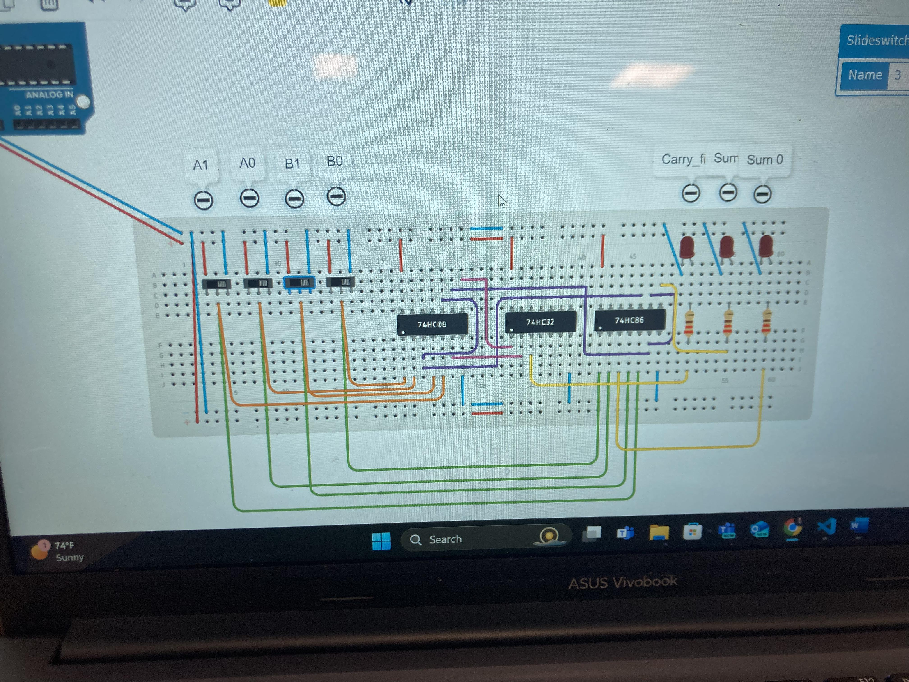

Projects
This is the heart of the site.
You’ll get a look at what I’ve been working on, from software projects to hands-on hardware builds. The projects here span a range of skills and areas, each showcasing different aspects of my expertise and curiosity. Each project page will give you a breakdown of its purpose, my approach, the tools and languages used, and what I learned along the way. This includes:
You’ll find various software applications and coding projects that demonstrate my programming skills, primarily in C#. These range from complex algorithms and data structures to search and sorting methods, which show my analytical and logical abilities in action.
Since web development is part of my curriculum, I’m continually honing my skills in HTML, CSS, and JavaScript. I’ve included examples of websites I’ve built, complete with creative layouts and interactive features.
I’m also diving into hardware, working on projects with tools like Arduino. These hands-on builds have challenged me to merge programming skills with real-world applications. Each project here is documented with screenshots, code snippets, and clear explanations. I want employers to understand my versatility as a developer, capable of taking on both software and hardware challenges.
I’ll outline the programming languages, frameworks, and tools I’m familiar with. As a developer, I know my strengths, but I’m also honest about what I’m still working on. I think this transparency is essential because it shows that I’m aware of my limitations, but I’m constantly looking to improve.